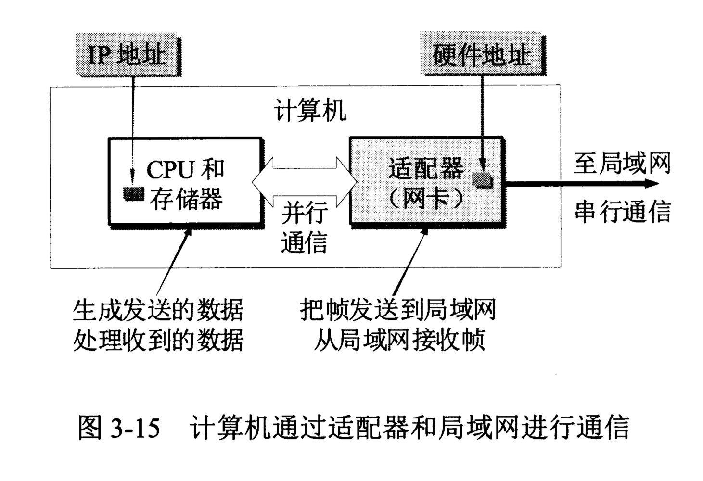
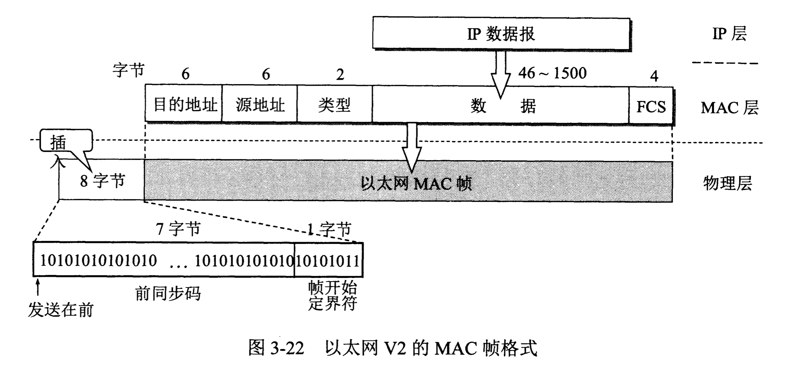

计算机网络/数据链路层/使用广播信道的数据链路层
# 局域网的数据链路层 局域网最主要的特点是：网络为一个单位所拥有，且地理范围和站点数目均有限。
局域网具有如下一些主要优点：
1. 具有广播功能，从一个站点可很方便地访问全网。局域网上的主机可共享连接在局域网上的各种硬件和软件资源。
2. 便于系统的扩展和逐渐演变，各设备的位置可灵活调整和改变。
3. 提高了系统的可靠性(reliability)、可用性(availability)和生存性(survivability)。
网络适配器（网卡）
计算机与外界局域网的连接是通过通信适配器(adapter)进行的。适配器本来是主机箱内插入的一块网络接口板（或者是在笔记本电脑中插入一块PCMCIA卡--个人计算机存储器卡适配器）。这种接口板又称为网络接口卡NIC(Network Interface Card)或简称为“网卡”。现在计算机主板上都已经嵌入了这种适配器，不再使用单独的网卡了。
适配器和局域网之间的通信是通过电缆线或双绞线以串行传输方式进行的，而适配器和计算机之间的通信则是通过计算机主板上的I/O总线以x传输方式进行的。因此，适配器的一个重要功能就是要进行数据串行传输和并行传输的转换。由于网络上的数据率和计算机总线上的数据率并不相同，因此在适配器中必须装有对数据进行缓存的存储芯片。
适配器在接收和发送各种帧时，不使用计算机的CPU。当适配器收到有差错的帧时，就把这个帧直接丢弃而不必通知计算机。当适配器收到正确的帧时，它就使用中断来通知该计算机，并交付协议栈中的网络层。当计算机要发送IP数据报时，就由协议栈把IP数据报向下交给适配器，组装成帧后发送到局域网。

CSMA/CD协议
总线的特点是：当一台计算机发送数据时，总线上的所有计算机都能检测到这个数据。总线上只要有一台计算机在发送数据，总线的传输资源就被占用。因此，在同一时间只能允许一台计算机发送数据，否则各计算机之间就会互相干扰。以太网的协调方法是CSMA/CD协议，意思是载波监听多点接入/碰撞检测(Carrier Sense Mutiple Access with Collision Detection)。
为了通信的简便，以太网采取了一下两种措施：
1. 采用较为灵活的无连接的工作方式。适配器对发送的数据帧不进行编号，也不要求对方发回确认。以太网提供的服务是尽最大努力的交付，即不可靠的交付。当目的站收到有差错的数据帧时，就把帧丢弃，其他什么也不做。对有差错帧是否需要重传则由高层来确定。
2. 以太网发送的数据都使用曼切斯特(Manchester)编码的信号。
CSMA/CD协议的要点：
1. “多点接入”就是说明这是总线型网络，许多计算机以多点接入的方式接在一根总线上。协议的实质是“载波监听”和“碰撞检测”。
2. “载波监听”就是用电子技术检测总线上有没有其他计算机也在发送。载波监听就是检测信道，这是个很重要的措施。不管在发送前，还是发送中，每个站都必须不停地检测信道。
3. “碰撞检测”也就是“边发送边监听“，即适配器边发送数据边检测信道上的信号电压的变化情况，以便判断自己在发送数据时其他站是否也在发送数据。
CSMA/CD协议的主要内容：
1. 准备发送：适配器从网络层获得一个分组，加上以太网的首部和尾部，组成以太网帧，放入适配器的缓存中。但在发送之前，必须先检测信道。
2. 检测信道：若检测到信道忙，则应不停地检测，一直等待信道转为空闲。若检测到信道空闲，并在96比特时间内信道保持空闲（保证了帧间的最小距离），就发送这个帧。
3. 在发送过程中仍不停地检测信道，即网络适配器要边发送边监听。这里有两种可能性：
- 发送成功：在争用期内一直未检测到碰撞。这个帧肯定能够发送成功。发送完毕后，其他什么也不做。然后回到(1)。
- 发送失败：在争用期内检测到碰撞。这是立即停止发送数据，并按规定发送认为干扰信号。适配器接着就执行指数退避算法，等待r倍512比特时间后，返回到步骤(2)，继续检测信道。但若重传达到16次仍不能成功，则停止重传而向上报错。
争用期：
以太网的端到端往返时间
使用集线器的星形拓扑
集线器的一些特点：
1. 使用集线器的以太网在逻辑上仍是一个总线网，各站共享逻辑上的总线，使用的还是CSMA/CD协议。
2. 一个集线器有许多接口。
3. 集线器工作在物理层。
4. 集线器采用了专门的芯片，进行自适应串音回波抵消。
以太网的信道利用率
极限信道利用率：
以太网的MAC层
MAC层的硬件地址
在局域网中，硬件地址又称为物理地址或MAC地址。
局域网规定了一种48位的全球地址（一般都简称为“地址”），是指局域网上的每一台计算机中固化在适配器的ROM中的地址。
MAC帧的格式

参考文献：《计算机网络（第7版）》谢希仁著。